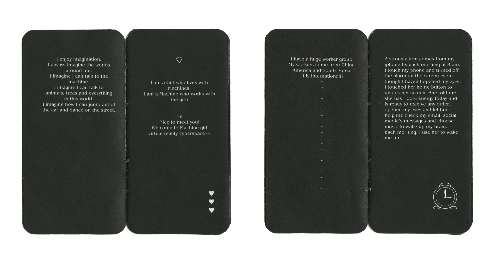

“Imagination is more important than knowledge. Knowledge is limited. Imagination encircles the worlds”(Viereck, 1929: 117. Albert Einstein)
Labor in Cyber 是一本以叙事方式讲诉的迷你小说，讲诉的是在赛博网络虚拟空间存在和工作的人力，主要人物以我手机中常用应用为原型，以办公室工作相处和社交为主要故事发展背景，手机闹铃声响起，手机在提醒你起床以及重要事件，一个红灯闪烁，手机需要电量的补充。在人与机械互相服务，共同工作的过程，幻想出了一个我们未曾发现，却早已介入的未知世界。
✿ Labor in Cyber show ✿


Labor in Cyber, 2019
Venue: Pump House, Richmond, VA, USA
Technique: Publication Design, Sound Installation
Size: 4.75 inches x 2.5 inches book
Material: Digital voice recorder, White hard hat, LED light, wood table, black makeup mirror
Software: InDesign, Audition
The work we did as labor is the way it pushes us to become a cyborg. Labor in Cyber is a collabration stories happens in a magical cyberspace. Labor in Cyber is a multimedia publication show which contains a digital sound piece, art writing, and book publication design. The white hard hat is connected with the earphone and played the audio from the voice recorder, which gives the interactive experience of each viewer to hear the story. The book size is similar to the size of my iPhone 6s. I wrote some interesting stories about me and applications on my phone. They are all my labours. In our life, we work close every day, am I also labor for them? The application’s stories are a description of our digital life.
我们当下与机器共同工作的方式同时也推动我们成为一个半机械人的生活状态。Labor in Cyber是发生在网络空间的神奇故事。 Labor in Cyber 是一个多媒体出版物，它包含一个数字声音片段，艺术写作，和书籍出版设计。白色安全帽与耳机相连，播放录音器的声音，让每位观众都有听到故事的互动体验。书的大小和我的iPhone 6s大小差不多。我写了一些有趣的故事关于我和我的应用程序。这些都是我的劳动力。在我们的生活中，我们每天都在近距离的工作，我也在为他们劳动吗?应用程序的故事描述了我们当下的数字生活。
✿ Labor in Cyber book ✿
{kind=link}

{kind=link}
{kind=link}
{kind=link}
Art writings by Yutong Liu